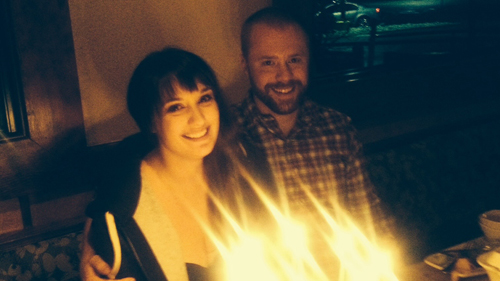
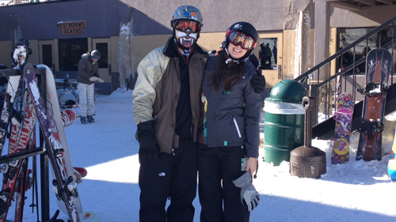
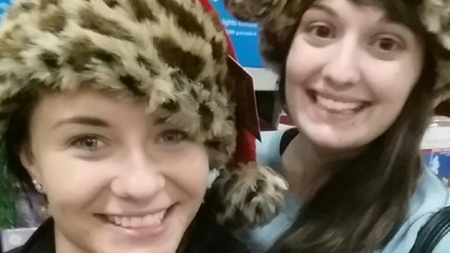
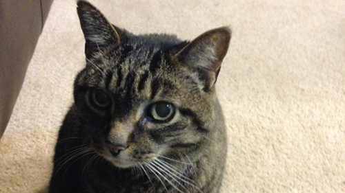
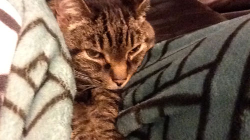

My Boyfriend
Maddie and Kolby
This is my boyfriend Kolby, I love him with all my heart. He makes me want to be a better person and conquer all my fears. He puts up with a lot from me but we really balance each other well. He's my little Arkansas Ginger Bird!


My Family
Best family ever
My family is so entirely important to me. I am a daddy's girl through and through. He has given me so much guidence and direction in life and every opportunity in thw world to succeed. I will forever be greatful to him for all the opportunites I have had. My mom and I are total opposites but it works so wonderfully. She is like my other half and when we are together, we bring out the best in each other. I have never felt so comfortable with someone in my life. I love them to both to pieces.
Erin is like a sister to me. She is my rock and I don't know what I would do without her. She has been there for some very hard time in my life and she constantly picks me up. She is my best friend for now and for always.

My Cat
Sometimes cats are better than humans...
This is Cookie. Although Sway would suggest otherwise, she is a perfect little angel. I have had her for 16 years now and I have loved her wholeheartedly the entire time. I love having a creature comfort on those really hard days. We even talk to each other, well, she meows mostly. Cats 4 lyfe!

